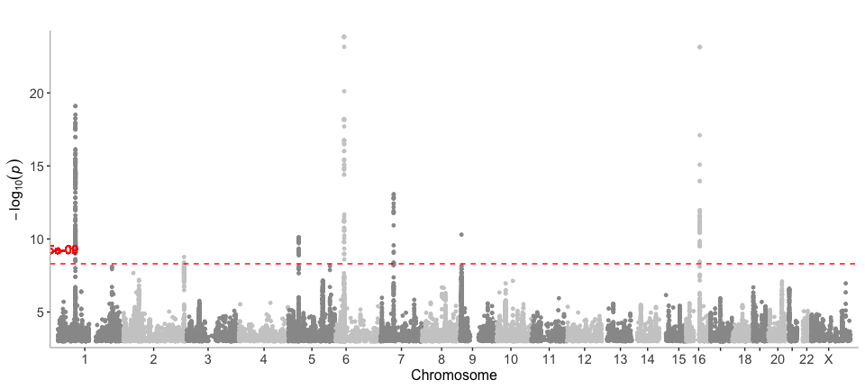
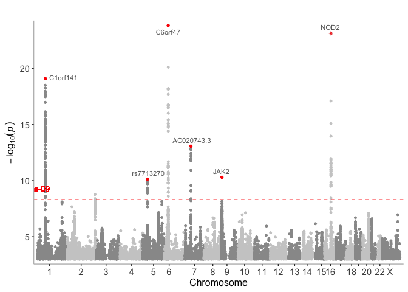
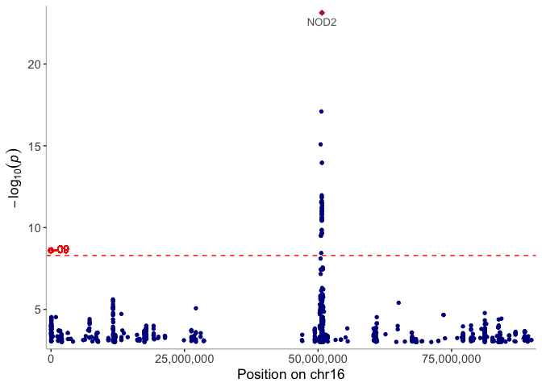
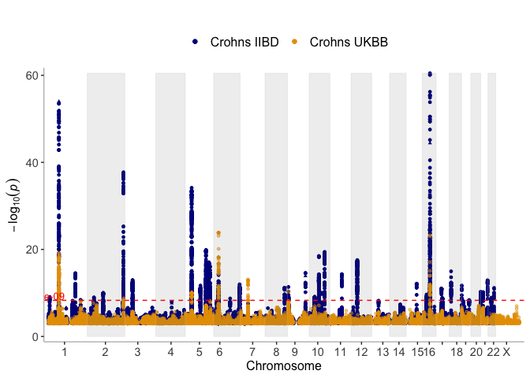
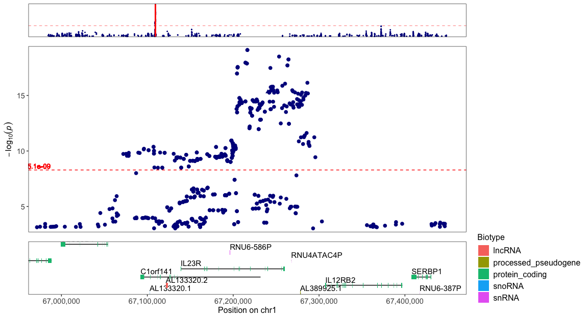
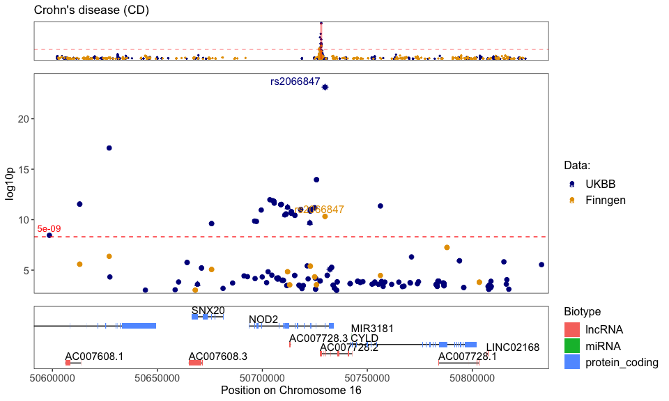
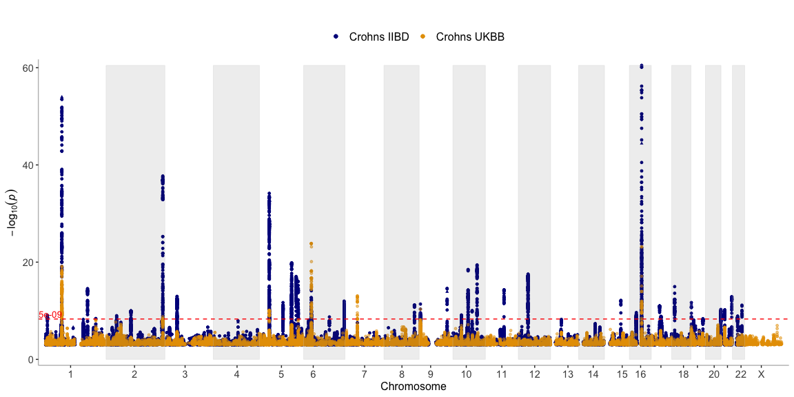
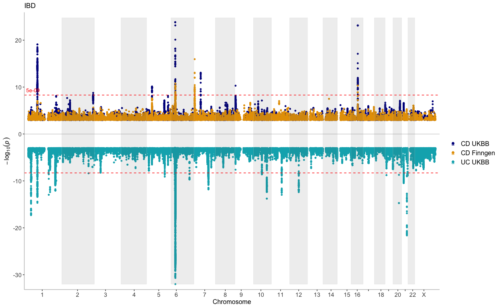

See full documentation at https://wuxi-nextcode.github.io/topR/
Example
In this example we demonstrate the basic usage of the topR library.
Load packages
First load the topr package, the tidyverse package is recommended in general, but not required for this example
library(topR)
library(tidyverse)
#> ── Attaching packages ─────────────────────────────────────── tidyverse 1.3.0 ──
#> ✔ ggplot2 3.3.3 ✔ purrr 0.3.4
#> ✔ tibble 3.1.2 ✔ dplyr 1.0.6
#> ✔ tidyr 1.1.3 ✔ stringr 1.4.0
#> ✔ readr 1.4.0 ✔ forcats 0.5.0
#> ── Conflicts ────────────────────────────────────────── tidyverse_conflicts() ──
#> ✖ dplyr::filter() masks stats::filter()
#> ✖ dplyr::lag() masks stats::lag()Loading and exploring prebuilt datasets
Load the gwas_CD dataset, which is a subset of association results (SNPs with P<1e-03) for Crohn´s disease from the UK biobank.
It is highly recommended to theck the number of datapoints in your dataset before you plot, since a very large dataset will take a long time to plot.
data(gwas_CD)
head(gwas_CD)
#> CHROM POS ID REF ALT SE P OR
#> 1 chr1 1006415 rs145588482 TGGCAGCTC T 0.1540620 0.000468758 0.583384
#> 2 chr1 1006415 rs145588482 TGGCAGCTC T 0.1540620 0.000468758 0.583384
#> 3 chr1 1007256 rs76233940 G A 0.1540250 0.000401567 0.579783
#> 4 chr1 1007256 rs76233940 G A 0.1540250 0.000401567 0.579783
#> 5 chr1 1007256 rs76233940 G A 0.1540250 0.000401567 0.579783
#> 6 chr1 1341559 rs376494450 C T 0.0732974 0.000151216 1.320130
#> AF Gene_Symbol Max_Impact max_consequence
#> 1 0.0129317 AL645608.3 LOWEST downstream_gene_variant
#> 2 0.0129317 ISG15 LOW intron_variant
#> 3 0.0130091 AL645608.1 LOWEST downstream_gene_variant
#> 4 0.0130091 AL645608.3 LOWEST downstream_gene_variant
#> 5 0.0130091 ISG15 LOW intron_variant
#> 6 0.0270627 DVL1 LOW intron_variantManhattan plots
Get an overview of association results for crohn’s disease (CD) in a Manhattan plot
manhattan(gwas_CD)
Label the top SNPs with the name of the nearest gene
Use the get_best_snp_per_MB function to extract the top/lead SNPs from the crohns dataset. Then include them in the manhattan call function with the variants argument.
snps_CD <- get_best_snp_per_MB(gwas_CD, thresh = 1e-09, region = 10000000)
manhattan(gwas_CD, variants=snps_CD, annotation_thresh = 1e-09) ## Label the position of genes of interest
genes=get_genes_by_Gene_Symbol(c("NOD2","ULK2","THADA"))
snps_CD <- get_best_snp_per_MB(gwas_CD, thresh = 1e-09, region = 10000000)
manhattan(gwas_CD, variants=snps_CD, annotation_thresh = 1e-09, highlight_genes=genes,highlight_genes_ypos = 1)
Chromplot
Take a closer look at the results by chromosome. Here we plot the results on chromosome 16 only.
CHR="chr16"
chromplot(gwas_CD,chr=CHR, variants = snps_CD, annotation_thresh = 5e-09)
Regionplot
Zoom in further on the chromosome plot with the regionplot function.
Zoom in on a gene of interest:
regionplot(gwas_CD, gene="NOD2")
#> [1] "Zoomed to region: chr16:50593587-50834041"
Zoom in on the top hit on a chromosome
CHR="chr1"
top_hit=get_top_hit(gwas_CD,chr=CHR)
xmin=top_hit$POS-250000
xmax=top_hit$POS+250000
regionplot(gwas_CD, chr = CHR, xmin=xmin,xmax=xmax,show_exons = T)
#> [1] "Zoomed to region: chr1:66966513-67466513"
Display multiple datasets on the same plot
Display the output from more than one GWAS on the same plot
Chromplot - multiple phenotypes
Take a closer look at the results by chromosome. Here we plot the results on chromosome 16 only.
CHR="chr16"
snps_CD_IIBD <- get_best_snp_per_MB(gwas_CD_IIBD, thresh = 1e-09, region = 10000000)
chromplot(list(gwas_CD_IIBD,gwas_CD),chr=CHR, variants = list(snps_CD_IIBD,snps_CD),
annotation_thresh = 5e-09, legend_labels=c("Crohns IIBD", "Crohns UKBB"), alpha=c(1,0.7),size=c(1.2,1))
Manhattan - multiple phenotypes
data(gwas_CD_IIBD)
manhattan(list(gwas_CD_IIBD,gwas_CD), legend_labels= c("Crohns IIBD", "Crohns UKBB"), alpha = c(1, 0.5))
data(finngen_K11_CD_STRICT)
data(finngen_CHRONSMALL)
genes=get_genes_by_Gene_Symbol(c("NOD2","ULK2","THADA"))
manhattan(list(gwas_CD_IIBD,gwas_CD,finngen_K11_CD_STRICT,finngen_CHRONSMALL),
ntop=3,
legend_labels= c("Crohns IIBD", "Crohns UKBB","Crohns Finngen (K11 STRICT)", "Crohns finngen (CHRONSMALL)"),
alpha = c(1,0.5,0.3,1),
highlight_genes = genes,
highlight_genes_ypos = -1)